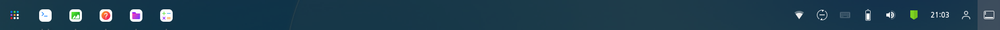
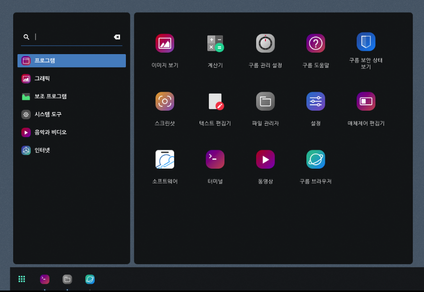
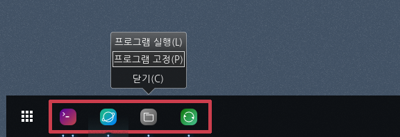
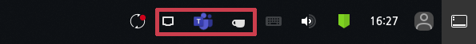
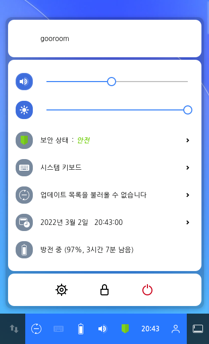

구름 운영 체제에서는 사용자를 방해하는 요소를 최소하하며 작업을 완료할 수 있도록 설계된 사용자 인터페이스를 제공합니다. 처음 로그인하면 빈 바탕 화면과 하단의 패널이 나타납니다.  하단의 패널에서는 창 및 애플리케이션, 일정 및 약속, 사운드, 네트워크 및 전원과 같은 시스템 속성에 대한 액세스를 제공합니다. 시스템 메뉴에서는 볼륨 또는 화면 밝기를 변경, Wi-Fi 연결 세부 정보를 편집, 배터리 상태를 확인, 로그아웃 또는 사용자 전환을 실행하거나 컴퓨터를 끌 수 있습니다.
구름 앱 시작 애플릿

구름 앱 시작 애플릿을 통해 애플리케이션에 접근할 수 있습니다. 구름 앱 시작 애플릿을 실행하려면 패널 왼쪽 하단의 [시작]단추를 클릭합니다. [프로그램] 탭에서는 컴퓨터에 설치된 모든 애플리케이션을 확인할 수 있습니다. 개발, 그래픽, 보조 프로그램 등으로 구분하여 애플리케이션을 제공합니다. 왼쪽 상단의 검색 창에서 원하는 애플리케이션을 검색할 수 있습니다. 실행하려는 애플리케이션 이름의 일부 또는 전체를 입력하세요.
구름 빠른 실행 애플릿

[시작] 단추 오른쪽 옆에 있는 구름 빠른 실행 애플릿 영역에서는 특정 애플리케이션의 아이콘과 이름이 표시되며 이에 대한 빠른 액세스를 제공합니다. 자주 사용하는 애플리케이션을 이 영역에 고정하거나 고정 해제할 수 있습니다. 원하는 애플리케이션을 고정하려면 아이콘에서 마우스 오른쪽 단추를 눌러 [프로그램 고정]을 선택합니다. 구름 운영 체제에서 창을 전환하려면 창 전환 방식을 참고하세요. 창 전환을 사용하면 주변 환경에 의해 방해받지 않고 현재 작업에 집중할 수 있습니다.
구름 알림 표시 애플릿
구름 알림 표시 애플릿 영역에서는 애플리케이션에 대한 정보나 시스템에 대한 상태를 지속적으로 보여줍니다. 이 영역에서는 Ayatana를 이용하여 구현된 프로젝트를 통합하여 노출시킵니다.

운영 체제의 알림 표시 영역은 Microsoft 95 디자인으로 GNOME 초기 버전부터 도입되었습니다. 알림 표시 애플릿에 위치한 애플리케이션의 아이콘을 클릭하면 실행 또는 종료와 같은 상태를 변경할 수 있습니다. 네트워크 편집 자세히 보기 구름 알림 표시 애플릿 자세히 보기
구름 통합 애플릿

구름 통합 애플릿을 통해 시스템 정보를 확인하고, 조작할 수 있습니다. 사용자, 음량, 보안 상태, 키보드 언어, 날짜 및 시간을 차례로 표시합니다. 이러한 정보는 장치의 상태나 환경 설정에 따라 달라질 수 있습니다.
애플릿 화면 하단에는 [설정]  , [화면 잠금] , [전원] 메뉴를 제공합니다.
[설정] 메뉴를 통해 설정 프로그램에 접근할 수 있습니다. 여기에서는 키보드, 마우스 및 터치패드, 디스플레이, 언어, 사용자 계정 등을 편집할 수 있습니다.
화면 잠금을 설정하면 컴퓨터를 사용하지 않을 때 다른 사람이 파일을 확인하거나 애플리케이션을 실행하지 못하도록 화면을 잠글 수 있습니다. 사용자가 자리로 돌아온 뒤 화면 잠금을 해제하려면 암호를 입력해야 합니다. 화면을 잠그지 않고 일정 시간이 지나면 화면이 자동으로 잠깁니다.
[전원] 메뉴에서는 로그아웃, 전원 끄기 또는 사용자 전환 기능을 이용할 수 있습니다.
, [화면 잠금] , [전원] 메뉴를 제공합니다.
[설정] 메뉴를 통해 설정 프로그램에 접근할 수 있습니다. 여기에서는 키보드, 마우스 및 터치패드, 디스플레이, 언어, 사용자 계정 등을 편집할 수 있습니다.
화면 잠금을 설정하면 컴퓨터를 사용하지 않을 때 다른 사람이 파일을 확인하거나 애플리케이션을 실행하지 못하도록 화면을 잠글 수 있습니다. 사용자가 자리로 돌아온 뒤 화면 잠금을 해제하려면 암호를 입력해야 합니다. 화면을 잠그지 않고 일정 시간이 지나면 화면이 자동으로 잠깁니다.
[전원] 메뉴에서는 로그아웃, 전원 끄기 또는 사용자 전환 기능을 이용할 수 있습니다.
구름 바탕 화면 표시 애플릿
구름 바탕 화면 표시 애플릿을 사용하여 열려 있는 모든 창을 닫고 바탕 화면을 표시할 수 있습니다. 바탕 화면 오른쪽 하단에서 아이콘을 클릭하세요.
1. [구름 바탕 화면 표시 애플릿]을 클릭하면 바탕 화면이 표시됩니다. 2. 닫은 창을 모두 다시 보려면 [구름 바탕화면 표시 애플릿]을 다시 한번 누릅니다.
기타
구름 업데이트 아이콘을 통해 실시간 업데이트 현황을 확인할 수 있습니다.
 |
평상시에 나타나는 아이콘입니다. |
| 업데이트 항목이 있을 때 나타납니다. | |
| 업데이트 관리자가 실행되고 있을 때 나타나는 아이콘 입니다. | |
| 오류 사항이 있을 때 나타나는 아이콘입니다. |
업데이트 더 자세히 보기